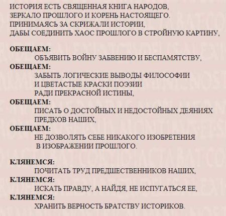
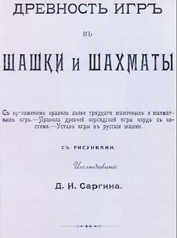
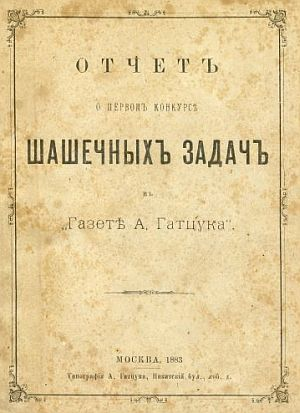
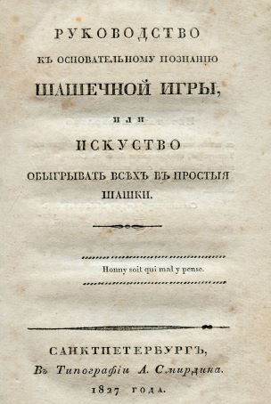

|
|
|
|
|
|
Давид М. Нудельман Взгляд читателя на исторические исследования В
идеале взаимоотношения историка и читателя просты и понятны.
Историк раскрывает то, чего доселе не знал рядовой читатель,
извлекает на свет истину, скрытую слоями времени, испытывая при
этом радость первопроходца и первооткрывателя. Читатель же просто
приобретает новые для себя знания о прошлом. Так происходит
процесс передачи информации от одного к другому. Читая рецензии, можно выделить существенные элементы, лежащие в их основе. Это может быть одобрение одних частей и критика других частей произведения автора. Нередко рецензенты ставят под сомнение достоверность приведенных автором фактов, указывая, где доказанные факты, а где только гипотезы историка-исследователя. Автор должен соблюдать те «нормы», которыми руководствовались историки с древних времен. Речь идет о достоверности фактов, насколько убедительно они были доказаны, о надежности использованных автором источников… Читатель, естественно, будет полагать, что у историков или людей, пишущих на исторические темы, существуют моральные нормы в их работе, которые не позволят ввести в заблуждение читателя. И как тут не вспомнить об этическом обязательстве врачей, которые давали клятву Гиппократа – великого древнегреческого врача, реформатора античной медицины, естествоиспытателя и философа! Было бы не лишним, чтобы подобную клятву давали и выпускники исторических факультетов, а энтузиасты и непрофессионалы учли эти принципы. Мой поиск подобной клятвы привел к некоторому успеху: в Интернете (http://un.csu.ru/609/111.htm) я нашел такую клятву (или ее проект) автора, не указавшего свое имя. клятва историка 
Придерживались ли принципов научной честности и беспристрастности авторы, писавшие на шахматно-шашечные темы в прошлом, и соблюдаются ли эти принципы в наши дни? Начнем с работ Давида Ивановича Саргина (1859 – 1920). Титул «историка» ему присвоили лишь в статьях послереволюционного времени. Он не имел специального исторического образования и окончил всего лишь Институт Восточных языков. Его попытки получить высшее образование не привели ни к чему: пробыв на первом курсе Московского университета повторно два года, он не появлялся для сдачи экзаменов и был отчислен… Знаменит Д.И.Саргин прежде всего многолетней деятельностью по популяризации шашечной игры и монографией «Древность игр в шашки и шахматы» (М., 1916. — XXIV, 350 экз., с. 396) - исследованием, которое по праву может быть поставлено в один ряд с мировыми произведениями на историческую тему. Помимо прочего эта книга является самой полной библиографией шахматной и шашечной литературы, вышедшей в России до 1916 года.
 Следует заметить, что книга Саргина увидела свет только потому, что была бесцензурным изданием. Ознакомившись с принципом работы Саргина над его исследованием, могу смело утверждать, что иначе книга бы не вышла вообще. Несмотря на ее достоинства, она не переиздавалась даже во времена существования СССР. Возможно историки шахмат и шашек поднимали вопрос о ее переиздании, но дело в том, что на обороте титульного листа Саргин указал, что «перепечатка и переводы воспрещаются». А когда же стало возможным переиздание этой книги? Закон СССР, а теперь России, об охране авторских прав говорит, что любая книга считается перешедшей в общественное достояние после 50 лет, считая с 1 января после года ее опубликования. Таким образом, согласно вышеуказанному, уже в 1967 году книга Саргина стала общественным достоянием. А это означает, что она может быть использована любым лицом без выплаты авторского вознаграждения. Однако до сегодняшнего дня книга так и не была переиздана или переведена. О
причинах этого приходится строить гипотезы: Некоторые взгляды Саргина не соответствуют в целом нормам, выраженным выше в клятве. Более того, сегодня мы можем сказать, что в своем исследовании при высказываниях на политические темы автор не был до конца откровенен. Об этом можно судить по недавно найденному продолжению книги, законченному Саргиным в 1918 году. В этих дополнениях к книге приведены высказывания юдофобов о евреях. Не имей он такой склонности, не стал бы цитировать антисемитские выпады известного историка Иловайского и других. Тем не менее, работа Саргина является весьма ценным историческим исследованием. Издание чисто исторической и библиографической частей был бы весьма полезным. Приведу другой пример из творчества Саргина, не соответствующий принципам исторического изложения фактов.  В 1883 году вышла первая из двух книг Саргина – «Отчет о первом конкурсе шашечных задач в газете А. Гатцука, Москва, Типография А. Гатцука, Никитский бул., соб. д.». В ней он упомянул «Руководство к основательному познанию шашечной игры и искусство обыгрывать всех в простые шашки», СПб, 1827, вышедшее без указания сочинителя. Он сделал утверждение, что на авторство А.Д.Петрова впервые указал редактор журнала «Шахматный Листок» Виктор Михайлович Михайлов(1828 -1883) в своей статье в 1861 году, № 29. И вот здесь Саргин допустил оплошность, не делающую ему чести как историку и библиографу: он просто проигнорировал тот факт, что авторство "Руководства" было установлено еще в двадцатых годах.  Для неосведомленного читателя представим хронологию сведений об авторстве этой книги. Сведения о Александре Дмитриевиче Петрове (1799 – 1867) как об авторе (или составителе) появились через шесть месяцев после выхода «Руководства…» в книге известного книгоиздателя и владельца крупнейшей библиотеки, перешедшей к нему от предыдущего владельца - Василия Алексеевича Плавильщикова (1768 -1823) Александра Филипповича Смирдина (1795 - 1857) «Роспись российским книгам для чтения из библиотеки Александра Смирдина, система Азбучной Росписи имен Сочинителей и переводчиков, и Краткой Росписи книгам по азбучному порядку», СПб, 1828. Это издание, вместе с дополнениями, является вторым по времени пособием по русской библиографии. Следует заметить, что еще в 1820 году книги библиотеки Плавильщикова начал описывать библиограф В.Г. Анастасевич (1775 – 1845). Он продолжал эту работу и после того, как библиотека перешла во владение Смирдина. Анастасевич исполнял обязанности цензора с 1820 по 1830 г. и, естественно, имел сведения об авторах или сочинителях произведений, попавших в Цензурный комитет. Совместные усилия Смирдина как издателя книги Петрова и цензора Анастасевича и выявили имя автора «Руководства…». Позднее, почти через 10 лет, сочинитель «Таблиц игр» в подстрочной сноске указал источник - «Роспись российским книгам…», где указана и книга Петрова. Таким образом, уже ко времени написания первой книги Саргина имя автора «Руководства…» не было секретом. Саргину было тогда 24 года, и он лишь только начал приобретать литературу для своей необыкновенной шахматно-шашечной библиотеки, достигшей максимума до 1917 г. Во время написания первой книги «Отчет…» у него не было двух упомянутых нами источников, а идея просмотреть, что имеется в библиотеках, и поговорить с авторитетами по поводу сочинений А.Д. Петрова у него не возникала. Он не использовал работы своих предшественников, и эту оплошность можно отнести к ошибкам молодости. Однако и 33 года спустя, во второй своей книге («Древность игр…»), в которой упоминается и «Роспись Российским книгам…» Смирдина, Саргин не признал своей ошибки, хотя и знал о ней, не изменил своего прежнего утверждения. Так Саргин нарушил обязательства историка перед читателем. Интересным
примером служит анализ преподнесения нового факта советским
шахматным историком и литератором, автором многочисленных статей
и книг по истории шахмат в СССР Михаилом Сауловичем Коганом (1898
– 1942). Факт был новым, ибо за 77 лет до выхода «Очерков…» Когана, когда Петров опубликовал свою биографию в «Шахматном Листке» В.А. Михайлова (см. выше), кто-то неправильно вычислил год его рождения как 1794. И эта ошибка оставалась незамеченной. К сожалению, Коган не счел нужным объяснить, как ему удалось установить действительный год рождения А.Д. Петрова, источники найденной им информации остались неизвестными. Это могли быть и контакты с внуками Петрова по линии его трех дочерей (Елены, Марии и Евдокии), проживавших в России. Материалы из архивов нужно исключить, ибо они содержали месяц и день рождения, которые Коган не указал. Найденные мною материалы (см. журнал «64- Шахматное обозрение» №1 за 2014 год - статья «Поправки к биографии. К 215-летию со дня рождения А.Д.Петрова») указывают на день рождения А.Д.Петрова 13 февраля (2 февраля по старому стилю) 1799 года, что вносит коррективу в воспоминания самого Петрова, указавшего неточную дату. Ни рецензировавший книгу Когана историк В.И.Нейштадт, ни историк И.М. Линдер не обратили внимания на указанный Коганом действительный год рождения первого русского шахматного мастера. Поэтому до сего дня признанным годом рождения А.Д. Петрова считался 1794. Вот к чему может привести несоблюдение простого правила, предписывающего всегда указывать достоверные источники новой исторической информации. Своеобразное толкование принципов «заветов историка» наблюдается и у современного историка шахмат И.М. Линдера. Перечислять некоторые отклонения этого историка от принципов норм описания фактов нет смысла, ибо они хорошо известны по статьям многих его критиков. Укажу лишь статью известного библиографа Сахарова Н.И. (1921 – 1999) в журнале «64» -Шахматное обозрение, №14, 1980 - «Загадка целого века». Серия моих статей с критикой на сочинения И.М. Линдера опубликованы на сайте е3е5.соm под заглавием «Нужна ли фантазия в истории шахмат?». Цель данного материала – призвать историков и энтузиастов уважать читателя и четко указывать источники приводимых фактов, не заставляя его, как говорят американцы «to chase a wild goose» - преследовать дикого гуся, что означает - не делать лишней работы. © Давид М. Нудельман 2014 |
|
|
|